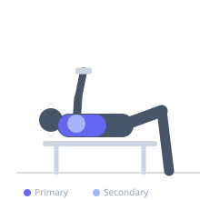

Exercise guide / Feet-Elevated Dumbbell Flye
Feet-Elevated Dumbbell Flye
A dumbbell flye performed with the feet elevated on a bench to place the body in a slight decline position, shifting the stretch and contraction emphasis toward the lower and sternal fibers of the pectoralis major. The decline angle changes the direction of force relative to the lower chest muscle fibers, providing targeted isolation of the lower pectoral region.
Primary muscles
pectoralis major sternal
Secondary muscles
deltoid anterior
Stabilizers
infraspinatus
triceps long head
Equipment
Dumbbell (Fixed)
Flat Bench


Starting position
- Lie on a flat bench with feet elevated on a box or second bench. Hold a dumbbell in each hand above the chest, arms extended with a slight elbow bend, palms facing each other.
Setup
- Set up a flat bench with a box or second flat bench of similar height for feet. Select dumbbells appropriate for a flye movement (lighter than pressing weight).
Steps
- Step 1: Begin with arms extended above the lower chest, dumbbells nearly touching, palms facing each other.
- Step 2: Lower dumbbells out to the sides in a wide arc, maintaining the fixed elbow bend. Feel a deep stretch in the lower chest.
- Step 3: Reverse the arc, driving the dumbbells back together above the chest.
- Step 4: Squeeze the pectorals at the top and repeat.
Coaching cues
- Bend in the elbows stays exactly the same the whole way
- Think of your arms as the arms of a clock sweeping from 10 and 2 to 12
Breathing
- Inhale as you lower the dumbbells to the sides. Exhale as you bring them back together.
Range of motion
- Open to full stretch where shoulder allows, closing fully at top with dumbbells almost touching.
Tempo
- 3-1-2-1 (3s open, 1s stretch, 2s close, 1s squeeze)
Common mistakes
- Letting the elbows bend excessively, turning it into a press
- Lowering too fast with heavy dumbbells, risking shoulder strain
- Feet slipping off the elevated surface during the set
Safety
- Keep elbows slightly bent and fixed — do not straighten them
- Use a conservative weight until the shoulder feels stable in this decline angle
Training
- hypertrophy: 10–15 reps
- endurance: 15–20 reps
- hypertrophy: 3–4 sets
- endurance: 2–3 sets
- Rest: {'hypertrophy': 75, 'endurance': 45}